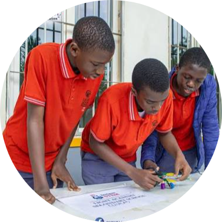
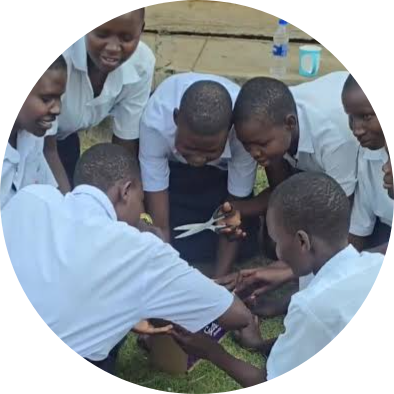

RWAMUCUCU SEED SECONDARY SCHOOL
P.O BOX 1146
KABALE-RUKIGA DISTRICT
| HOME | ACADEMICS | PROJECTS | SPORTS | ONLINE FORM |
project page
In strict alignment with the National Curriculum Development Centre (NCDC) directives, our School Project program serves as a vibrant hub for Innovation and Self-Reliance. Moving away from abstract theory, our learners collaborate in teams to identify tangible societal issues, research solutions, and design practical products using locally available resources. By actively engaging in these project cycles, our students do not just earn the 20% continuous assessment score required by UNEB; they acquire the 21st-century teamwork, leadership, and entrepreneurial skills necessary to become the job creators of tomorrow's Uganda


Motto: EDUCATION IS WEALTH